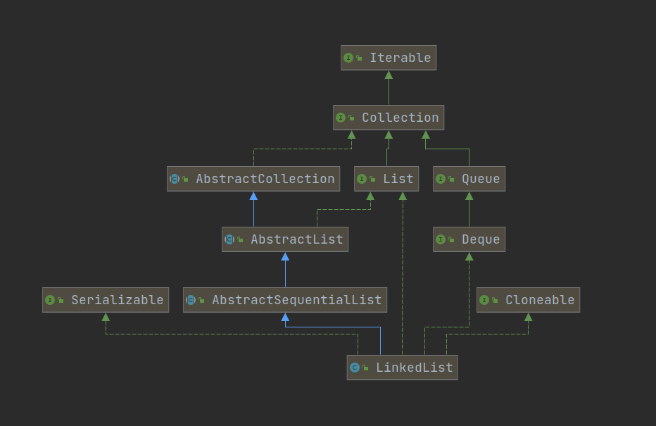

1.概述 1.1 说明 作者水平有限, 如有错误还望各位指正.
本文源码来自: JDK8 .
1.2 简介 LinkedList 是非线程安全的, 允许元素为 null 的双向链表.
底层结构是链表, 增删效率较高, 随机访问元素效率较差, 适用于增删为主的场景 (和 ArrayList 相反).
1.3 继承关系 
因部分类/接口在 ArrayList 中介绍过了, 本文不再介绍.
AbstractSequentialList: 和 AbstractList 相似, 不再过多介绍.
Deque: 提供了双向链表操作.
2. 源码 2.1 字段 1 2 3 4 5 6 7 8 9 10 11 12 13 14 15 16 17 18 19 20 21 22 23 24 25 26 27 28 29 30 31 32 33 34 transient int size = 0 ; transient Node<E> first; transient Node<E> last; private static class Node <E> { E item; Node<E> next; Node<E> prev; Node(Node<E> prev, E element, Node<E> next) { this .item = element; this .next = next; this .prev = prev; } }
2.2 构造方法 1 2 3 4 5 6 7 8 9 10 11 12 13 14 15 16 public LinkedList () {} public LinkedList (Collection<? extends E> c) { this (); addAll(c); }
2.3 辅助方法 因增删改查等主要方法都会调用这几个辅助方法, 因此先介绍一下.
1 2 3 4 5 6 7 8 9 10 11 12 13 14 15 16 17 18 19 20 21 22 23 24 25 26 27 28 29 30 31 32 33 34 35 36 37 38 39 40 41 42 43 44 45 46 47 48 49 50 51 52 53 54 55 56 57 58 59 60 61 62 63 64 65 66 67 68 69 70 71 72 73 74 75 76 77 78 79 80 81 82 83 84 85 86 87 88 89 90 91 92 93 94 95 96 97 98 99 100 101 102 103 104 105 106 107 108 109 110 111 112 113 114 115 116 117 118 119 120 121 122 123 124 125 126 127 128 129 130 131 132 133 134 135 136 137 138 139 140 141 142 143 144 145 146 147 148 149 150 151 152 153 154 155 156 157 158 159 160 161 162 163 164 165 166 167 168 169 170 171 172 173 174 175 176 private void linkFirst (E e) { final Node<E> f = first; final Node<E> newNode = new Node <>(null , e, f); first = newNode; if (f == null ) last = newNode; else f.prev = newNode; size++; modCount++; } void linkLast (E e) { final Node<E> l = last; final Node<E> newNode = new Node <>(l, e, null ); last = newNode; if (l == null ) first = newNode; else l.next = newNode; size++; modCount++; } void linkBefore (E e, Node<E> succ) { final Node<E> pred = succ.prev; final Node<E> newNode = new Node <>(pred, e, succ); succ.prev = newNode; if (pred == null ) first = newNode; else pred.next = newNode; size++; modCount++; } private E unlinkFirst (Node<E> f) { final E element = f.item; final Node<E> next = f.next; f.item = null ; f.next = null ; first = next; if (next == null ) last = null ; else next.prev = null ; size--; modCount++; return element; } private E unlinkLast (Node<E> l) { final E element = l.item; final Node<E> prev = l.prev; l.item = null ; l.prev = null ; last = prev; if (prev == null ) first = null ; else prev.next = null ; size--; modCount++; return element; } E unlink (Node<E> x) { final E element = x.item; final Node<E> next = x.next; final Node<E> prev = x.prev; if (prev == null ) { first = next; } else { prev.next = next; x.prev = null ; } if (next == null ) { last = prev; } else { next.prev = prev; x.next = null ; } x.item = null ; size--; modCount++; return element; } Node<E> node (int index) { if (index < (size >> 1 )) { Node<E> x = first; for (int i = 0 ; i < index; i++) x = x.next; return x; } else { Node<E> x = last; for (int i = size - 1 ; i > index; i--) x = x.prev; return x; } } private void checkPositionIndex (int index) { if (!isPositionIndex(index)) throw new IndexOutOfBoundsException (outOfBoundsMsg(index)); } private boolean isPositionIndex (int index) { return index >= 0 && index <= size; } private void checkElementIndex (int index) { if (!isElementIndex(index)) throw new IndexOutOfBoundsException (outOfBoundsMsg(index)); } private boolean isElementIndex (int index) { return index >= 0 && index < size; }
2.4 增 1 2 3 4 5 6 7 8 9 10 11 12 13 14 15 16 17 18 19 20 21 22 23 24 25 26 27 28 29 30 31 32 33 34 35 36 37 38 39 40 41 42 43 44 45 46 47 48 49 50 51 52 53 54 55 56 57 58 59 60 61 62 63 64 65 66 67 68 69 70 71 72 73 74 75 76 77 78 79 80 81 82 83 84 85 86 87 88 89 90 91 92 93 94 95 96 97 98 99 100 101 102 103 104 105 106 107 108 109 110 111 112 113 public void addFirst (E e) { linkFirst(e); } public void addLast (E e) { linkLast(e); } public boolean add (E e) { linkLast(e); return true ; } public void add (int index, E element) { checkPositionIndex(index); if (index == size) linkLast(element); else linkBefore(element, node(index)); } public boolean addAll (Collection<? extends E> c) { return addAll(size, c); } public boolean addAll (int index, Collection<? extends E> c) { checkPositionIndex(index); Object[] a = c.toArray(); int numNew = a.length; if (numNew == 0 ) return false ; Node<E> pred, succ; if (index == size) { succ = null ; pred = last; } else { succ = node(index); pred = succ.prev; } for (Object o : a) { @SuppressWarnings("unchecked") E e = (E) o; Node<E> newNode = new Node <>(pred, e, null ); if (pred == null ) first = newNode; else pred.next = newNode; pred = newNode; } if (succ == null ) { last = pred; } else { pred.next = succ; succ.prev = pred; } size += numNew; modCount++; return true ; }
接下来的方法都是 Deque 的添加操作, 几乎都是调用的上面的方法不再过多叙述
1 2 3 4 5 6 7 8 9 10 11 12 13 14 15 16 17 18 19 20 21 22 23 24 25 26 27 28 29 30 31 32 33 34 35 36 37 38 39 40 41 42 public boolean offer (E e) { return add(e); } public boolean offerFirst (E e) { addFirst(e); return true ; } public boolean offerLast (E e) { addLast(e); return true ; } public void push (E e) { addFirst(e); }
2.5 删 1 2 3 4 5 6 7 8 9 10 11 12 13 14 15 16 17 18 19 20 21 22 23 24 25 26 27 28 29 30 31 32 33 34 35 36 37 38 39 40 41 42 43 44 45 46 47 48 49 50 51 52 53 54 55 56 57 58 59 60 61 62 63 64 65 66 67 68 69 70 71 72 73 74 75 76 77 78 79 80 81 82 83 84 85 86 87 88 89 90 91 92 93 94 95 96 97 98 99 100 101 102 103 104 105 106 107 108 109 110 111 112 113 114 115 116 117 118 119 120 121 122 123 124 125 126 127 128 129 130 131 132 133 134 135 136 137 138 139 140 141 142 143 144 145 146 147 148 149 150 151 152 public E removeFirst () { final Node<E> f = first; if (f == null ) throw new NoSuchElementException (); return unlinkFirst(f); } public E removeLast () { final Node<E> l = last; if (l == null ) throw new NoSuchElementException (); return unlinkLast(l); } public boolean remove (Object o) { if (o == null ) { for (Node<E> x = first; x != null ; x = x.next) { if (x.item == null ) { unlink(x); return true ; } } } else { for (Node<E> x = first; x != null ; x = x.next) { if (o.equals(x.item)) { unlink(x); return true ; } } } return false ; } public E remove (int index) { checkElementIndex(index); return unlink(node(index)); } public E poll () { final Node<E> f = first; return (f == null ) ? null : unlinkFirst(f); } public E remove () { return removeFirst(); } public E pop () { return removeFirst(); } public E pollFirst () { final Node<E> f = first; return (f == null ) ? null : unlinkFirst(f); } public E pollLast () { final Node<E> l = last; return (l == null ) ? null : unlinkLast(l); } public boolean removeFirstOccurrence (Object o) { return remove(o); } public boolean removeLastOccurrence (Object o) { if (o == null ) { for (Node<E> x = last; x != null ; x = x.prev) { if (x.item == null ) { unlink(x); return true ; } } } else { for (Node<E> x = last; x != null ; x = x.prev) { if (o.equals(x.item)) { unlink(x); return true ; } } } return false ; }
2.6 改 1 2 3 4 5 6 7 8 9 10 11 12 13 14 15 16 17 public E set (int index, E element) { checkElementIndex(index); Node<E> x = node(index); E oldVal = x.item; x.item = element; return oldVal; }
2.7 查 1 2 3 4 5 6 7 8 9 10 11 12 13 14 15 16 17 18 19 20 21 22 23 24 25 26 27 28 29 30 31 32 33 34 35 36 37 38 39 40 41 42 43 44 45 46 47 48 49 50 51 52 53 54 55 56 57 58 59 60 61 62 63 64 65 66 67 68 69 70 71 72 73 74 75 76 77 78 79 80 81 82 83 84 public E getFirst () { final Node<E> f = first; if (f == null ) throw new NoSuchElementException (); return f.item; } public E getLast () { final Node<E> l = last; if (l == null ) throw new NoSuchElementException (); return l.item; } public E get (int index) { checkElementIndex(index); return node(index).item; } public E peek () { final Node<E> f = first; return (f == null ) ? null : f.item; } public E element () { return getFirst(); } public E peekFirst () { final Node<E> f = first; return (f == null ) ? null : f.item; } public E peekLast () { final Node<E> l = last; return (l == null ) ? null : l.item; }
2.8 迭代器 1 2 3 4 5 6 7 8 9 10 11 12 13 14 15 16 17 18 19 20 21 22 23 24 25 26 27 28 29 30 31 32 33 34 35 36 37 38 39 40 41 42 43 44 45 46 47 48 49 50 51 52 53 54 55 56 57 58 59 60 61 62 63 64 65 66 67 68 69 70 71 72 73 74 75 76 77 78 79 80 81 82 83 84 85 86 87 88 89 90 91 92 93 94 95 96 97 98 99 100 101 102 103 104 105 106 107 108 109 110 111 112 113 114 115 116 117 118 119 120 121 122 123 124 125 126 127 128 129 130 131 132 133 134 135 public ListIterator<E> listIterator (int index) { checkPositionIndex(index); return new ListItr (index); } private class ListItr implements ListIterator <E> { private Node<E> lastReturned; private Node<E> next; private int nextIndex; private int expectedModCount = modCount; ListItr(int index) { next = (index == size) ? null : node(index); nextIndex = index; } public boolean hasNext () { return nextIndex < size; } public E next () { checkForComodification(); if (!hasNext()) throw new NoSuchElementException (); lastReturned = next; next = next.next; nextIndex++; return lastReturned.item; } public boolean hasPrevious () { return nextIndex > 0 ; } public E previous () { checkForComodification(); if (!hasPrevious()) throw new NoSuchElementException (); lastReturned = next = (next == null ) ? last : next.prev; nextIndex--; return lastReturned.item; } public int nextIndex () { return nextIndex; } public int previousIndex () { return nextIndex - 1 ; } public void remove () { checkForComodification(); if (lastReturned == null ) throw new IllegalStateException (); Node<E> lastNext = lastReturned.next; unlink(lastReturned); if (next == lastReturned) next = lastNext; else nextIndex--; lastReturned = null ; expectedModCount++; } public void set (E e) { if (lastReturned == null ) throw new IllegalStateException (); checkForComodification(); lastReturned.item = e; } public void add (E e) { checkForComodification(); lastReturned = null ; if (next == null ) linkLast(e); else linkBefore(e, next); nextIndex++; expectedModCount++; } public void forEachRemaining (Consumer<? super E> action) { Objects.requireNonNull(action); while (modCount == expectedModCount && nextIndex < size) { action.accept(next.item); lastReturned = next; next = next.next; nextIndex++; } checkForComodification(); } final void checkForComodification () { if (modCount != expectedModCount) throw new ConcurrentModificationException (); } } public Iterator<E> descendingIterator () { return new DescendingIterator (); } private class DescendingIterator implements Iterator <E> { private final ListItr itr = new ListItr (size()); public boolean hasNext () { return itr.hasPrevious(); } public E next () { return itr.previous(); } public void remove () { itr.remove(); } }
2.9 序列化 1 2 3 4 5 6 7 8 9 10 11 12 13 14 15 16 17 18 19 20 21 22 23 24 25 26 27 28 29 30 31 32 33 private void writeObject (java.io.ObjectOutputStream s) throws java.io.IOException { s.defaultWriteObject(); s.writeInt(size); for (Node<E> x = first; x != null ; x = x.next) s.writeObject(x.item); } @SuppressWarnings("unchecked") private void readObject (java.io.ObjectInputStream s) throws java.io.IOException, ClassNotFoundException { s.defaultReadObject(); int size = s.readInt(); for (int i = 0 ; i < size; i++) linkLast((E)s.readObject()); }
2.10 其他API 1 2 3 4 5 6 7 8 9 10 11 12 13 14 15 16 17 18 19 20 21 22 23 24 25 26 27 28 29 30 31 32 33 34 35 36 37 38 39 40 41 42 43 44 45 46 47 48 49 50 51 52 53 54 55 56 57 58 59 60 61 62 63 64 65 66 67 68 69 70 71 72 73 74 75 76 77 78 79 80 81 82 83 84 85 86 87 88 89 90 91 92 93 94 95 96 97 98 99 100 101 102 103 104 105 106 107 108 109 110 111 112 113 114 115 116 117 118 119 120 121 122 123 124 125 126 127 128 129 130 131 132 133 134 135 136 137 138 139 140 141 142 143 144 145 146 147 148 149 150 151 152 153 154 155 156 157 158 159 160 161 162 public boolean contains (Object o) { return indexOf(o) != -1 ; } public int indexOf (Object o) { int index = 0 ; if (o == null ) { for (Node<E> x = first; x != null ; x = x.next) { if (x.item == null ) return index; index++; } } else { for (Node<E> x = first; x != null ; x = x.next) { if (o.equals(x.item)) return index; index++; } } return -1 ; } public int lastIndexOf (Object o) { int index = size; if (o == null ) { for (Node<E> x = last; x != null ; x = x.prev) { index--; if (x.item == null ) return index; } } else { for (Node<E> x = last; x != null ; x = x.prev) { index--; if (o.equals(x.item)) return index; } } return -1 ; } public int size () { return size; } public void clear () { for (Node<E> x = first; x != null ; ) { Node<E> next = x.next; x.item = null ; x.next = null ; x.prev = null ; x = next; } first = last = null ; size = 0 ; modCount++; } @SuppressWarnings("unchecked") private LinkedList<E> superClone () { try { return (LinkedList<E>) super .clone(); } catch (CloneNotSupportedException e) { throw new InternalError (e); } } public Object clone () { LinkedList<E> clone = superClone(); clone.first = clone.last = null ; clone.size = 0 ; clone.modCount = 0 ; for (Node<E> x = first; x != null ; x = x.next) clone.add(x.item); return clone; } public Object[] toArray() { Object[] result = new Object [size]; int i = 0 ; for (Node<E> x = first; x != null ; x = x.next) result[i++] = x.item; return result; } @SuppressWarnings("unchecked") public <T> T[] toArray(T[] a) { if (a.length < size) a = (T[])java.lang.reflect.Array.newInstance( a.getClass().getComponentType(), size); int i = 0 ; Object[] result = a; for (Node<E> x = first; x != null ; x = x.next) result[i++] = x.item; if (a.length > size) a[size] = null ; return a; }